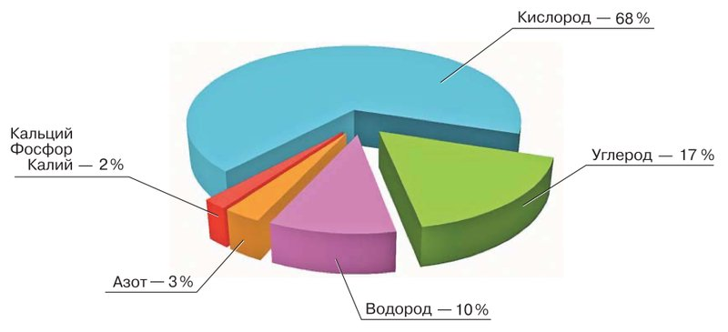
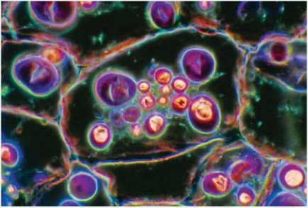

Химический состав клетки
Амина, в этой теме мы заглянем внутрь клетки и узнаем, из чего она сделана.
Вспомни азбуку. В ней всего 33 буквы, а из них складываются любые слова: и «камень», и «котёнок», и «яблоко».
В природе так же. Её «буквы» — химические элементы: кислород, углерод, водород, азот и другие. Из одних и тех же элементов сложены и камень, и вода в море, и любая живая клетка.
Элементы соединяются в «слова» — вещества. Одни вещества клетки неорганические: вода и минеральные соли. Другие органические: углеводы, белки, жиры и нуклеиновые кислоты. У каждого вещества в клетке своя работа.
В параграфе четыре части:
У каждого шага написано, на какой странице учебника искать. Внизу шага есть «Подробнее, как в учебнике»: там всё, что есть на этих страницах, ничего не пропущено. Сначала учи по коротким шагам, а перед уроком открой «подробнее».
Надпись вверху шага подскажет, откуда он: синяя — из учебника, золотая — задание учебника, оранжевая — сверх учебника (пересказ, словарик, игры, самопроверка). В «Содержании» шаги так же разбиты на группы.
Подробнее, как в учебнике · с. 22
- Параграф называется «Химический состав клетки». Он на с. 22–25, в главе 1 «Растение — живой организм».
- В начале параграфа рамка «Вспомните» с двумя вопросами — они на шаге 2.
- На с. 22 — текст про химические элементы и схема (шаг 3), таблица «Химический состав клетки, %» (шаг 4). На с. 23 — неорганические и органические вещества (шаги 4–8).
- На с. 24 — рамка «Запомните»: неорганические вещества, вода, минеральные соли, органические вещества, углеводы, белки, жиры, нуклеиновые кислоты. Все эти слова — в словарике (шаг 13). Там же «Проверьте себя» (шаг 19) и «Подумайте!» (шаг 20).
- На с. 24–25 — «Моя лаборатория»: две работы «Исследуйте» (шаги 9–11) и «Выполните задание» (шаг 12).
Вспомни
В начале параграфа, в рамке «Вспомните», два вопроса. Они про то, что ты уже проходила раньше. Попробуй ответить сама, а подсказку читай, если застряла.
Что такое химический элемент?
Подсказка: вспомни азбуку из шага 1. Элементы — это «буквы», из которых сложено всё вокруг. Названия каких элементов ты знаешь? Слово «элемент» разобрано на шаге 3.
Шаг 3 · Из каких элементовКакие химические вещества вам известны?
Подсказка: загляни на кухню. Что налито в чайник, что насыпано в солонку и в сахарницу? Всё это вещества. А какие вещества есть в клетке, — на шаге 4.
Шаг 4 · Два вида веществИз каких элементов состоит клетка?
Химический элемент — это «буква» природы: простейшая составная часть, из которых сложены все вещества. Например, кислород, углерод, железо.
Клетки всех живых организмов — и берёзы, и кошки, и твои — состоят из одних и тех же химических элементов. И эти же элементы входят в состав неживой природы.
Раз состав похож, значит, живое и неживое связаны. Учебник говорит так: сходство состава указывает на общность живой и неживой природы.
Больше всего в клетке четырёх элементов: углерода, водорода, кислорода и азота. Вместе они составляют до 98 % массы клетки. Сложи числа на плитках: 68 + 17 + 10 + 3 — как раз 98.
Около 2 % массы приходится на восемь элементов: калий, натрий, кальций, хлор, магний, железо, фосфор и серу. Остальные элементы есть в клетке в очень малых количествах.

А почему «до 98 %», а не ровно?
Клетки бывают разные, и в каждой элементов чуть больше или чуть меньше. Поэтому учебник пишет «до 98 %» и «около 2 %», а схему называет примерной.
Подробнее, как в учебнике · с. 22
- Клетки всех живых организмов состоят из одних и тех же химических элементов. Эти же элементы входят и в состав объектов неживой природы. Сходство состава указывает на общность живой и неживой природы.
- Больше всего в клетках таких химических элементов, как углерод, водород, кислород и азот. Вместе они составляют до 98 % массы клетки.
- Около 2 % массы клетки приходится на восемь элементов: калий, натрий, кальций, хлор, магний, железо, фосфор и серу. Остальные химические элементы содержатся в клетках в очень малых количествах.
- Схема на с. 22 — примерное соотношение химических элементов в клетке: кислород — 68 %, углерод — 17 %, водород — 10 %, азот — 3 %, кальций, фосфор, калий — 2 %.
Два вида веществ
Помнишь азбуку? Из букв-элементов складываются «слова» — вещества. Химические элементы, соединяясь между собой, образуют неорганические и органические вещества.
В учебнике есть таблица: сколько каждого вещества в клетке, в процентах от её массы.
Неорганические вещества
Вода — 40—95 %
Минеральные соли — 1,0—1,5 %
Органические вещества
Углеводы — 0,2—2,0 %
Белки — 10—20 %
Жиры — 1,0—5,0 %
Нуклеиновые кислоты — 1,0—2,0 %
Состав клеток всех организмов похож, но не одинаков. Сколько каких элементов и веществ в клетке, зависит от того, что это за клетка и какую работу она выполняет в организме.
Например, в клетках растений обычно больше всего углеводов, а в клетках животных — белков и жиров.
Как запомнить, что куда?
Неорганических веществ в списке два: вода и минеральные соли. Их много и в неживой природе: вода в море, соли в земле. Органических — четыре: углеводы, белки, жиры и нуклеиновые кислоты. Про каждое будет свой шаг.
Подробнее, как в учебнике · с. 22–23
- Химические элементы, соединяясь между собой, образуют неорганические и органические вещества.
- Таблица на с. 22 «Химический состав клетки, %». Неорганические вещества: вода — 40—95, минеральные соли — 1,0—1,5. Органические вещества: углеводы — 0,2—2,0, белки — 10—20, жиры — 1,0—5,0, нуклеиновые кислоты — 1,0—2,0.
- Хотя химический состав клеток всех живых организмов сходен, содержание разных элементов и веществ может сильно различаться. Это зависит от типа клеток и от того, какую функцию они выполняют в организме. Например, в растительных клетках, как правило, преобладают углеводы, а в клетках животных — белки и жиры.
Вода и минеральные соли
Вспомни цветок, который забыли полить: листья повисли, стебель обмяк. Польёшь — и он снова стоит. Это работает вода в его клетках.
Неорганические вещества клетки — это вода и минеральные соли.
Вода
Воды в клетке больше всего: от 40 до 95 % её массы. Вода:
- придаёт клетке упругость — клетка как надутый мяч, а не сдутый;
- определяет её форму;
- участвует в обмене веществ.
Обмен веществ — вся работа клетки с веществами: одни она получает, другие строит, ненужные выводит. Чем быстрее и активнее идёт обмен веществ в клетке, тем больше в ней воды.
Минеральные соли
Минеральные соли — примерно 1—1,5 % массы клетки. Это, например, соли кальция, калия, фосфора.
Клетка использует их для синтеза органических молекул — белков, нуклеиновых кислот и других. Синтез — это сборка сложного из более простого, как дом из кирпичей.
Если минеральных веществ не хватает, важнейшие процессы жизни клетки нарушаются.
Подробнее, как в учебнике · с. 23
- Неорганические вещества клетки — это вода и минеральные соли.
- Больше всего в клетке воды — от 40 до 95 % её общей массы. Вода придаёт клетке упругость, определяет её форму, участвует в обмене веществ.
- Чем выше интенсивность обмена веществ в клетке (то есть чем активнее он идёт), тем больше в ней воды.
- Минеральные соли — приблизительно 1—1,5 % общей массы клетки: например, соли кальция, калия, фосфора и др. Эти неорганические вещества используются для синтеза органических молекул (белков, нуклеиновых кислот и др.). При недостатке минеральных веществ нарушаются важнейшие процессы жизнедеятельности клетки.
Органические вещества. Углеводы
Органические вещества — сложные соединения, в которых обязательно есть углерод. Они входят в состав всех живых организмов.
Откуда название? Сначала учёные думали, что такие вещества образуют только живые организмы. Поэтому их и назвали органическими.
К органическим веществам относят углеводы, белки, жиры, нуклеиновые кислоты и другие вещества. Начнём с углеводов.
Углеводы
Представь печку: подбросишь дров — станет тепло. Для клетки такие «дрова» — углеводы. Когда клетка их расщепляет, то есть разбирает на части, она получает энергию, нужную для жизни.
- Энергия. При расщеплении углеводов клетки получают энергию.
- Прочность. Углеводы входят в состав оболочек клеток и делают их прочными.
- Запас. Крахмал и сахара — запасающие вещества клетки. Они тоже углеводы.
Где ты встречала углеводы?
Сахар в чае, крахмал в картошке и хлебе — всё это углеводы. Растения запасают их впрок в клубнях, зёрнах, плодах. В «Моей лаборатории» ты будешь искать крахмал в картофеле и пшенице.
Подробнее, как в учебнике · с. 23
- Органические вещества — сложные соединения, содержащие углерод. Они входят в состав всех живых организмов. Сначала считали, что органические вещества образуют только живые организмы, поэтому их и назвали органическими. К ним относят углеводы, белки, жиры, нуклеиновые кислоты и другие вещества.
- Углеводы — важная группа органических веществ: при их расщеплении клетки получают энергию, необходимую для жизнедеятельности. Углеводы входят в состав оболочек клеток и придают им прочность. Запасающие вещества клеток — крахмал и сахара — тоже относятся к углеводам.
Белки и жиры
Белки
Если клетка — дом, то белки в нём и стройматериал, и «управляющие». Учебник говорит: белки играют в жизни клеток важнейшую роль.
- Белки входят в состав самых разных частей клетки.
- Они регулируют, то есть направляют, процессы жизнедеятельности.
- Белки тоже могут запасаться в клетках.
Жиры
Жиры откладываются в клетках про запас. Одна из главных их работ — энергетическая: когда жиры расщепляются, освобождается энергия.
Жиры дают энергии в 2 раза больше, чем углеводы той же массы. По энергии грамм жира — как два грамма углеводов.
- У многих животных подкожный жир сохраняет тепло, как тёплая куртка.
- Зверь в спячке всю зиму живёт на запасах жира: снаружи энергию он получить не может.
- В семенах некоторых растений жиры — главный запас питательных веществ.
В Каспийском море, на берегу которого стоит Каспийск, живёт каспийский тюлень. Зимой он выходит на лёд в северной части моря, и от холода его спасает толстый слой подкожного жира.
Подробнее, как в учебнике · с. 23
- Белки играют важнейшую роль в жизни клеток. Они входят в состав разнообразных клеточных структур, регулируют процессы жизнедеятельности и тоже могут запасаться в клетках.
- Жиры откладываются в клетках. Одна из основных функций жиров — энергетическая: при их расщеплении освобождается энергия, необходимая живым организмам. Жиры дают энергии в 2 раза больше, чем углеводы, взятые в той же массе.
- Для многих животных подкожный жир — важная часть теплоизоляции. Животному, которое впадает в спячку, жиры дают нужную энергию: получить её извне (снаружи) оно не может. Жиры — основной запас питательных веществ и в семенах некоторых растений.
Нуклеиновые кислоты
Почему котёнок похож на кошку, а из семечки подсолнечника вырастает подсолнух, а не берёза? Потому что в каждой клетке хранится «инструкция», каким быть организму. Её передают от родителей потомкам.
Эту инструкцию называют наследственная информация. Главную роль в том, чтобы её сохранить и передать потомкам, играют нуклеиновые кислоты.
- Нуклеиновые кислоты есть во всех клетках.
- Это самые крупные молекулы, которые образуют живые организмы.
- Вместе они — единая система: хранят наследственную информацию и воплощают её в клетке.
А почему «воплощают»?
Мало хранить инструкцию — по ней надо ещё и работать. В учебнике сказано «реализация», то есть выполнение: по этой инструкции клетка живёт и строит себя. Ты могла слышать слово «ДНК» — это одна из нуклеиновых кислот.
Что ещё есть в клетке
В клетках растений в небольших количествах есть и другие вещества: витамины, эфирные масла (это от них так пахнут мята и кожура лимона) и другие.
В конце параграфа учебник говорит: клетка — это миниатюрная природная лаборатория. В ней создаются и изменяются самые разные химические соединения. А то, что у клеток разных организмов похожий химический состав, доказывает единство живой природы.
Шаг 3: элементы у живого и неживого одни и те же — это указывает на общность живой и неживой природы.
Здесь: состав клеток разных организмов похож — это доказывает единство живой природы.
Подробнее, как в учебнике · с. 23
- Нуклеиновые кислоты играют ведущую роль в сохранении наследственной информации и передаче её потомкам.
- Нуклеиновые кислоты содержатся во всех клетках, это самые крупные молекулы, которые образуют живые организмы. Нуклеиновые кислоты — единая система, направленная на хранение и реализацию наследственной информации в клетке.
- В растительных клетках в небольших количествах есть также витамины, эфирные масла и другие вещества.
- Клетка — это миниатюрная природная лаборатория, в которой синтезируются (создаются) и претерпевают изменения различные химические соединения.
- Сходство химического состава клеток разных организмов доказывает единство живой природы.
Обнаружение воды и минеральных веществ в растениях
Здесь нужен огонь спиртовки. Учебник прямо пишет: выполнять эту работу только в лаборатории, под руководством учителя. Дома её не повторяй.
Цель работы: обнаружить воду и минеральные вещества в растениях.
Материалы и оборудование: кусочки стебля, корня, листьев или несколько семян, пробирка, спиртовка, пипетка, пинцет, металлическая пластинка.
Ход работы
Положи в пробирку кусочки стебля, корня, листьев или несколько семян и нагрей их на слабом огне. Что появилось на стенках пробирки?
Подсказка: смотри на верхнюю, прохладную часть пробирки. Вспомни, что бывает с крышкой кастрюли, когда варится суп.
Нагрей кусочки растения на металлической пластинке. Они обугливаются, появляется дым: это сгорают органические вещества. На пластинке остаётся зола — это минеральные вещества, они не сгорают.
Подсказка: органические вещества горят, минеральные — нет. Поэтому на пластинке остаётся только то, что не горит.
Сделай вывод.
Подсказка: составь вывод сама из двух частей. Что было в растении, раз это появилось на стенках пробирки? И что было в растении, раз после сгорания осталась зола?
Обнаружение органических веществ в растениях
Работай в классе с учителем или дома со взрослыми. Раствор йода не пробуй на вкус и береги от него глаза. Он сильно пачкает кожу и одежду.
Цель работы: обнаружить органические вещества в растениях.
Материалы и оборудование: зёрна пшеницы, клубень картофеля, семена подсолнечника, марля, лист бумаги, раствор йода, крахмал, стакан с водой, ступка с пестиком, пробирка, пипетка, пинцет, металлическая пластинка.
Ход работы (пункты 1–5, остальные — на следующем шаге)
Разотри зёрна пшеницы в ступке в муку, добавь несколько капель воды и приготовь кусочек теста.
Заверни тесто в марлю, опусти мешочек в стакан с водой и промой его. Получится мутная взвесь.
Взвесь — вода, в которой плавают мельчайшие частички. Поэтому она и мутная.
Перелей часть мутной жидкости из стакана в пробирку и капни в неё 2—3 капли раствора йода. Жидкость станет синей.
Возьми на кончике пинцета крахмал и размешай в пробирке с водой. Капни туда 2—3 капли раствора йода. Вода с крахмалом тоже посинеет. Значит, в зёрнах пшеницы есть крахмал: йод окрашивает его в синий цвет.
Зачем этот пункт? Это проверка: здесь мы точно знаем, что в пробирке крахмал, и смотрим, какого цвета он станет от йода. Цвет тот же, что в пункте 3, — значит, и там был крахмал.
Капни каплю раствора йода на разрезанный клубень картофеля. Ты убедишься, что в клубне картофеля тоже есть крахмал (рис. 15).

Обнаружение органических веществ: продолжение
Рассмотри остаток теста на марле. Там клейкая масса — её называют клейковиной, или растительным белком.
Возьми несколько семян подсолнечника, сними с них кожуру и раздави на листе бумаги: появятся жирные пятна. Это подтверждает, что в семенах подсолнечника много жира.
Занеси результаты своего исследования в таблицу.
Сделай общий вывод: каков химический состав растений. Сформулируй его и запиши в тетрадь.
Таблица из учебника. Начерти её в тетради и заполни сама:
| Растение | Наблюдение | Вывод о содержании органических веществ |
|---|---|---|
| Зёрна пшеницы | ||
| Клубень картофеля | ||
| Семена подсолнечника |
Подсказка к таблице и выводу
В «Наблюдение» пиши, что ты увидела своими глазами: какой стал цвет, что осталось на марле, что появилось на бумаге. В «Вывод» — какое органическое вещество это показало. У пшеницы наблюдений два: вспомни и пункт 3, и пункт 6.
Для общего вывода загляни и в первый опыт (шаг 9): какие вещества ты нашла там? Вместе получится ответ, из каких веществ состоят растения — и неорганических, и органических.
Схема «Химический состав клетки»
Схему заполняешь ты сама. Вот как к ней подойти:
Сначала рассмотри пустую схему в рабочей тетради: сколько в ней веток и клеточек?
Все вещества клетки делятся на две большие группы. Какие? Какие вещества входят в каждую? Посмотри таблицу.
Шаг 4 · Два вида веществЕсли в схеме есть место, чтобы написать, зачем нужно вещество, — ищи на шагах про воду, соли, углеводы, белки, жиры и нуклеиновые кислоты.
Шаги 5–8Проверь себя: вспомни, что ты нашла в опытах. Каждое найденное вещество должно попасть в схему.
Шаги 9–11Словарик: слова «Запомните»
ИграЭто восемь слов из рамки «Запомните» на с. 24. Нажми на карточку, и она перевернётся. Словарик из двух частей, открой все карточки.
Словарик: ещё слова
ИграВторая часть: слова, которые встречаются в тексте и в опытах.
Кто за что отвечает
ИграУ каждого вещества в клетке своя работа. Нажми на вещество слева, потом на его работу справа.
Элемент или вещество?
ИграПрочитай карточку и выбери, что это: химический элемент, неорганическое вещество или органическое вещество.
Найди лишнее
ИграТри из одной компании, одно чужое. Найди чужое.
Проверь себя
Вопросы из учебника
Это вопросы из рамки «Проверьте себя», номера такие же, как в твоём учебнике. Рядом с каждым написано, на каком шаге искать ответ. Отвечай своими словами: так лучше запоминается, и учитель услышит, что ты поняла, а не заучила.
Каких химических элементов больше всего в клетке?
Подсказка: их четыре, вместе — до 98 % массы клетки. Посмотри и на схему: какой из них занимает самый большой кусок?
Шаг 3 · Из каких элементовКакую роль в клетке играет вода?
Подсказка: у воды три дела. Вспомни и про обмен веществ: где он активнее, там воды больше.
Шаг 5 · Вода и минеральные солиКакую роль в клетке играют минеральные соли?
Подсказка: для чего клетка их использует и что будет, если их не хватает?
Шаг 5 · Вода и минеральные солиКакие вещества относят к органическим?
Подсказка: сначала скажи, что такое органические вещества и какой элемент в них обязательно есть, а потом перечисли их.
Шаг 6 · УглеводыКаково значение органических веществ в клетке?
Подсказка: пройди по всем четырём — углеводы, белки, жиры, нуклеиновые кислоты — и скажи, что делает каждое.
Шаги 6–8Что указывает на общность живой и неживой природы?
Подсказка: сравни, из каких элементов состоят клетка и неживая природа. И не путай с «единством живой природы» из шага 8.
Шаг 3 · Из каких элементовВыполните задание: изучив параграф и проведя опыты, заполните в рабочей тетради схему «Химический состав клетки».
Шаг 12 · Схема в тетрадиПодумайте! Почему клетку сравнивают с миниатюрной природной лабораторией?
Шаг 20 · Подумай!Подробнее, как в учебнике · с. 24
- «Запомните»: неорганические вещества, вода, минеральные соли, органические вещества, углеводы, белки, жиры, нуклеиновые кислоты. Все эти слова — в словарике, шаг 13.
- «Проверьте себя»: шесть вопросов, они все перечислены выше.
- «Подумайте!»: почему клетку сравнивают с миниатюрной природной лабораторией? Разбор с подсказками — на последнем шаге.
- «Моя лаборатория» (с. 24–25): две работы «Исследуйте» — шаги 9–11, «Выполните задание» — шаг 12.
Подумай: почему клетку сравнивают с миниатюрной природной лабораторией?
Это вопрос из рамки «Подумайте!». Вот четыре «кирпичика» для ответа. Открой их, а потом попробуй ответить своими словами, не подглядывая.
Клетки всех организмов состоят из одних и тех же химических элементов, больше всего — из кислорода, углерода, водорода и азота; элементы образуют неорганические вещества (воду и минеральные соли) и органические (углеводы, белки, жиры, нуклеиновые кислоты), и у каждого вещества в клетке своя работа.